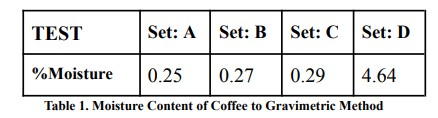
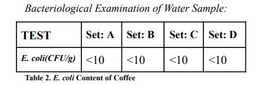
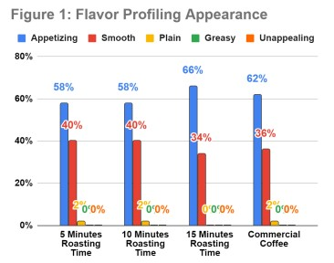
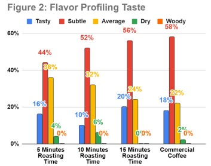
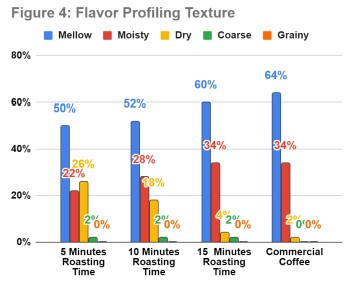
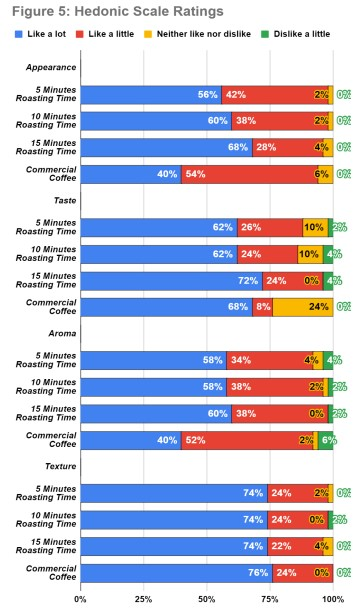

| Author | Exequiel B. Gendran, Ella Grace M. Caminian, Angelica P. Cariño, Jeno Jimena, Daron Gabriel Franco |
|---|---|
| Volume | 2 |
| Date Published | August 13, 2024 |
| Date Updated | August 13, 2024 |
Caffeine consumption is determined to be the most widely used psychoactive drug with over 90% of the world's adults consuming said caffeine-containing products. However, overconsumption of these beverages deals negative effects on the human brain as it occupies the receptor normally occupied by adenosine and prevents tardiness eventually ruining sleep quality. Squash seed samples were utilized and tested to identify its competency as an alternative with the higher phenolic and antioxidant activity values after varying exposure time to high temperatures resulting in an increase in bioavailability. The moisture content and Escherichia coli content of the squash coffee were compared to commercial coffee through microbiological analysis and physico-chemical analysis, as all sets demonstrated standard moisture levels less than 5% hence passing the coffee quality test and exhibited <10 CFU/g meeting safety standards. Furthermore sensory evaluation and consumer acceptability of the squash beverage were tested through panels consisting of 50 coffee drinkers resulting in the flavor profile and hedonic scale evaluation. As a result of these trials, the squash coffee is concluded to be employed as a low-cost, organic, and gratifying alternative to coffee.
The continuous consumption of coffee beverages is widespread among countries as it outweighs the intake of fruits, juices, and alcoholic beverages. [1] [2][3] With an estimated demand of 100,000 metric tons of coffee beans, the Philippine Coffee Industry could only produce 62,062 metric tons in the year 2019. [4] Consequently, the Covid-19 pandemic has adversely impacted the national coffee sectors’ revenues, employment, domestic consumption and exports, laying the rise for input and expenditures in terms of costs. [5][6] This excessive usage leads to problems such as diabetes, osteoarthritis, osteoporosis, restlessness, and sleep disruptions all caused by a psychoactive drug found in most coffee beverages; caffeine. [7][8][9][10] Subsequently, this is due to the stimulation it causes the central nervous system, heart, muscles, and the blood pressure control centers to be irregular at excessive amounts, specifically ≥ 400mg and promote physical and mental risks resulting in caffeine being highly monitored under specific programs by the World Anti-Doping Agency (WADA).[11][12][13][1 Even with rules and regulations in place, caffeine addiction and abuse is still a prevalent problem at this day and age specifically against unhealthy individuals and pregnant women. [15] Caffeine isn’t for everyone and should have limits in its intake for varying age groups. [16] This problem encouraged the researchers to investigate the feasibility of a coffee-like beverage from Cucurbita moschata seeds as an alternative for individuals who need to avoid excessive caffeine intake to keep their health safeguarded. Several studies have concluded the impact of squash seeds to other fields of research with its potential as a functional food ingredient and associated biological mechanism. [17] Squash seeds tend to exhibit higher phenolic and antioxidant activity values after exposure to high temperatures resulting to an increase of bioavailability. [18][19 [20][21] Investigations were conducted to produce coffee-like drinks from raw ingredients such as maize, taro, jackfruit seeds, and wheat all to produce a suitable alternative for coffee, provided the lack of caffeine.[22][23][24] Hence pushing this investigation to determine the potential of squash seeds as a substitute to coffee beverages. Specifically, this study aims to determine the moisture, E. coli content, sensory quality, and the consumer acceptability which involves the assessment of the product through the major senses which is vital in the development process to ensure the quality. [25] The flavor profile and point hedonic scale are utilized to measure preference, by taking a verbal scale and assigning it to numerical values to obtain information.[26] Furthermore, the researchers aim to identify if there is a significant difference in the moisture content, E. coli content, sensory quality, and consumer acceptability of the squash seed coffee and the commercially sold coffee as this study will invigorate the utilization of squash seeds in the production of a safe coffee-like beverages for people who are not allowed or keen to consume coffee beverages.
This study will be conducted in Bacolod City, where a total of four treatments with varied roasting times of the squash seed coffee and a control group will be evaluated for pH content, moisture levels, Escherichia coli content, flavor profiling, sensory quality, and consumer acceptability. The sensory quality and consumer acceptability will be done by surveying 50 coffee-drinkers selected through a strict criteria of age groups and “regular” coffee drinking frequency of a minimum three cups a week within the Brgy. Estefania community by utilizing the flavor profiling and the hedonic scale (like a lot, like slightly, neither like nor dislike, dislike slightly, and dislike a lot). The in-depth tests would be conducted with the assistance of the Negros Prawn Producers Cooperative. Lastly, the materials that will be used in the experiment are squash seeds, a frying pan, empty jars, blender, colander, disposable cups, weighing scale, oven, and clean containers.
The squash seeds will be gathered from a ripe squash and placed on a flat surface to be cleansed thoroughly by soaking it with water for 24 hours. By changing the water for every eight (8) hours in this time window, the squash seeds would then be dry roasted for 30 minutes for sterilization resulting in safe processing. Furthermore, the commercial coffee will be purchased from stores accordingly. Lastly, the equipment like the frying pan, empty jars, mortar, pestle, colander, disposable cups, and clean containers will be easily accessible within the household.
After preparing and sterilizing the 3 kg of squash seeds required, the product would then be blended into fine powder. With the squash seeds put into the blender, the squash powder would then be sieved with a colander to prevent the bigger chunks of squash seed powder getting with the final product and remain consistent with the size and quality.
The following sets would be placed in four (4) separated coffee presses labeled with Set A for the seeds roasted for 5 minutes, Set B for the seeds roasted for 10 minutes, Set C for the seeds roasted for 15 minutes at 250℃, and lastly Set D for the commercial coffee. All of which would be served to “regular” coffee drinkers for comparison.
Moisture content analysis would be done through the Gravimetric Method, a method of quantitative chemical analysis in which the constituent sought is converted into a substance that can be separated from the sample and weighed. This is due to the fact that moisture content affects the processability, shelf-life, usability and quality of a product. A moisture content of less than 4%-5% is the ideal content.[28]
Bacteriology Analysis would be conducted through Compact Dry Media measured with the colony-forming unit per gram. The E. coli strain is the most vital STEC serotype in relation to public health and is destroyed by thorough cooking of foods until all parts reach a temperature of 70 °C or higher. [29]
The researchers will provide the beverages on a small disposable cup and place fifty (50) cups for each corresponding set. Resulting into two-hundred (200) cups as a whole, the beverages will be distributed to the “regular” coffee drinkers above the age of 25 and be surveyed using the created flavor profiling test and the hedonic scale.
Sensory quality is the consumer's overall opinion of a food product. [25][30] Sensory tests of the coffee-like beverage produced will be assessed to determine the product acceptability conduct with consumers using taste, aroma, bitterness, sweetness, and overall acceptability as attributes. The combination of a hedonic scale of verbal divisions and flavor profiling through descriptive scoring will be used in the customer acceptance test. The Hedonic scale is by far the most commonly used measure for determining food acceptability. [31] Hence why this scale would be answered using a form provided by the researchers. Combined with the created flavor profiling questionnaire this would serve to determine the value of the product as an alternative.
The data obtained from the moisture, E. coli content and survey responses will undergo mean and standard deviation to compare the average variance within groups to the relative size of variance between group means, whether any of those are statistically significantly different from each other. [32]
Laboratory Test Results:

The moisture content percentage of Set A (Dry roasted for 5 minutes) was 0.25%, Set B (Dry roasted for 10 minutes) was 0.27%, Set C (Dry roasted for 15 minutes) was 0.29%, and Set D (Commercial Coffee) was 4.64%. Moisture content recommendation for instant coffee is below 4%-5% to maintain its original quality for years[28] . Hence it is determined that all groups reached the recommended percentage for moisture content. According to the results in Table 1, Set A has the lowest percent result for moisture content among the experimental groups, followed by Set B and Set C respectively. Lastly, Set D, which is the control group, exhibited the highest moisture content. It is observed that there is a significant difference presented in favor of the experimental groups as the drying of the product gives long life to the product and prevents it from microbial attack.
Bacteriological Examination of Water Sample:

Referring to the data presented in Table 2, Set A (Dry roasted for 5 minutes), Set B (Dry roasted for 10 minutes), Set C (Dry roasted for 15 minutes), and lastly Set D (Commercial Coffee) all exhibit <10 CFU/g which indicates the low presence of E. coli within each product. As the linear plate count of the said bacterium is typically 30-300 CFU/g on a standard petri dish and as well as the commercial coffee exhibiting similar results it is suggested that the squash coffee is safe for ingestion. Furthermore, with the standard of 100 CFU/gram set for the raw consumption of products, all experimental groups meet safety standards.
Sensory Quality of Squash Coffee:

The figures given represent the general impression of the respondents in terms of varying sensory evaluators contained by the product. Firstly, around 66% of coffee drinkers recorded Set C as Appetizing in terms of appearance or color of the coffee, 62% for Set D, and 58% for Sets A and B.

In a similar trend, the next figure brings emphasis on the taste as the coffee drinkers would rate 58% for Set D as it is described to Subtle, the same flavor profile was also used to describe the experimental sets with 56% for Set C followed by Set B with 52% and with Set A displaying a rating of 44%.
Then in terms of aroma, all sets were described to be Fragrant as 66% of the respondents rated as such for Set D, 60% for Set C, and 58% for both Set A and B.

Lastly in Figure 4, for the sensory evaluation is the texture of the coffee with all sets being described as Mellow, in which 64% described Set D as such, 60% for Set C, 52% for Set B, and 50% for Set A.
Consumer Acceptability of Squash Coffee:

The given figure would represent the Hedonic Scale Rating of the coffee in terms of Appearance, Taste, Aroma, and Texture. With the respondents being pleased as indicated by the 68% “like a lot” for Set C and the lowest with 40% for Set D. Moving onto taste evaluation, Set C displays the highest consumer acceptability with 72% in contrast to Sets A and B with 62% as the lowest. Then comes aroma where Set C displayed the highest rating of 60% and Set D with the lowest of 40% respondents liking the drink a lot. Lastly, texture would indicate Set D with the highest rating of 76% and all experimental sets having the same rating of 74%.
After the extensive analysis of the results and data presented, the researchers concluded squash coffee as a possible alternative to commercial coffee as the experimental group displayed significant similarities in terms of moisture levels, pH and met safety standards for bacteriological analysis. As the nature of squash presents a new discovery for a much cost-effective method for production and consumption as exhibited in the introductory statements, this resulted in an accessible study for the community. Furthermore, the USDA (United States Department of Agriculture) has indicated the lack of caffeine within every 100g of roasted and none roasted squash seeds resulting to a healthier alternative for regular coffee drinkers, whom of which were the main targets for aid within this study as many respondents also support a caffeine-free drink to welcome the morning.
An in-depth property analysis of what nutrients the squash seed coffee contains is another option the aspiring researchers could undergo to present this alternative to a wider audience after the quarantine has ended to acquire a wider range of data from other locales and groups.